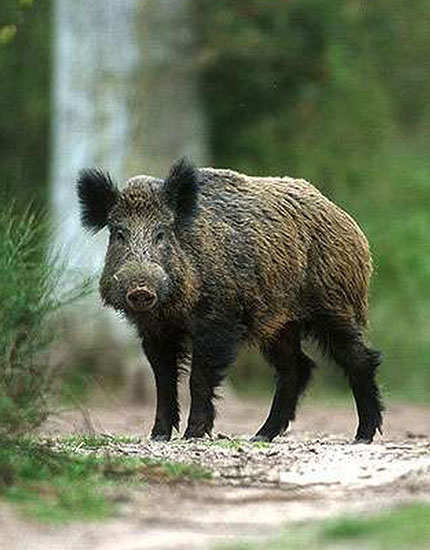
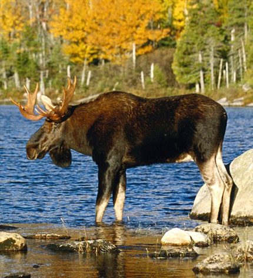
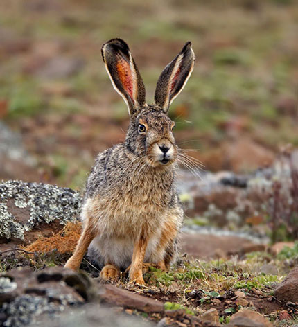
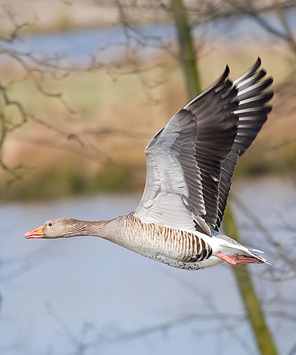
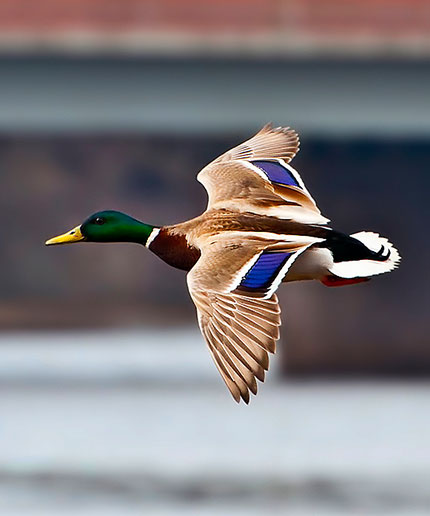
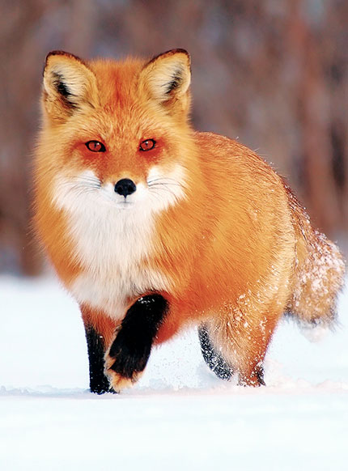
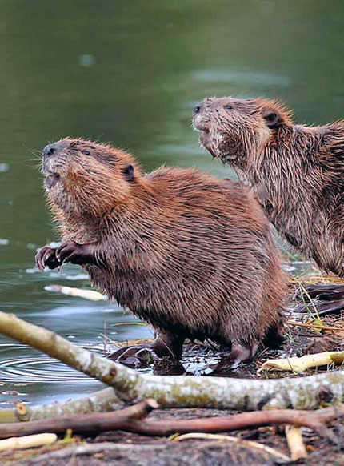
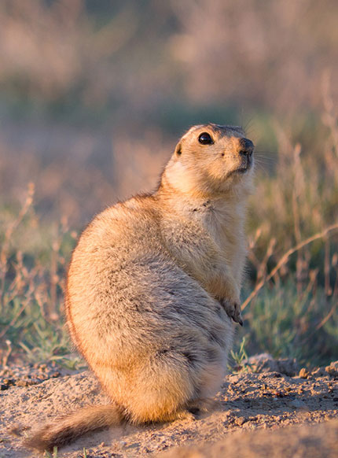

КАБАН
Охота на кабана сопряжена со значительной
опасностью, так как они
нередко
бросаются на охотников, причём самцы — «секачи» наносят рваные раны своими мощными клыками; Самки же, у
которых клыки менее развиты, чем у самцов, сбивают неосторожных охотников с ног и топчут их передними ногами.
Поэтому при загонной охоте на кабана иногда устраивают для охотников невысокие платформы, с которых кабаны,
вследствие неподвижности своей шеи, не могут сбросить охотника. Когда кабан бросается, лучше всего отскочить
перед самим животным в сторону, так как кабан, пронесшись мимо, редко возвращается обратно для нового
нападения. Опаснее всего старые кабаны, держащиеся в одиночку, а потому и называемые одинцами. У старых
секачей образуется на спине и по бокам что-то вроде брони из смеси смолы с шерстью кабана. Во время гона эта
броня (калкан) предохраняет бока животного от ударов клыков другого самца во время драки за самку. Кроме
загона, на кабанов охотятся с притравленными на них собаками (гончими и другими породами с примесью гончей
крови). Ночью кабана подкарауливают на засеянных полях, куда они выходят кормиться. В азиатской части бывшего
СССР, где кабаны водятся не только в лесах, но и в камышах, на них охотятся верхом, преследуя выпугнутых из
камышей животных и стреляя их на всем скаку. Гонят дикого кабана окриками : «Ач-ач!». Также распространена
охота с вышек (лабазов), где животных поджидают, когда они придут на подкормочную площадку.

ЛОСЬ
При большой численности лоси повреждают
лесные питомники и посадки. Почти повсюду лоси посещают солонцы; зимой слизывают соль даже с шоссейных дорог.
Лоси быстро, до 56 км/ч, бегают; хорошо плавают. Разыскивая водные растения, могут держать голову под водой
больше минуты. От хищников обороняются ударами передних ног. Из органов чувств у лося лучше всего развиты слух
и обоняние; зрение слабое — неподвижно стоящего человека он не видит на расстоянии немногих десятков метров.
Лось очень редко первым нападает на человека. Обычно нападение происходит при раздражающих факторах или
приближении к лосятам.
Лось — охотничье-промысловое животное (мясо и кожа). В СССР существовало 7 лосеферм, в настоящее время
существует две — лосеферма Печоро-Илычского заповедника и костромская лосеферма. Эти эксперименты отражены в
фильме А. Згуриди «Повесть о лесном великане». Молоко лосей сходно по вкусу с коровьим, но более жирное и
менее сладкое. Используется в лечебном питании. В целях консервации замораживается.

ЗАЯЦ
Охота на зайца — одна из самых любимых,
самых распространенных охот в нашей стране. Зайцы, населяющие просторы нашей родины чуть ли не от края до
края, делятся на четыре основных вида: беляк, русак, толай и маньчжурский заяц. Кроме того, иногда встречается
еще гибрид — так называемый тумак (помесь русака с беляком).
Сезон охоты на зайца открывается в середине осени и заканчивается зимой. Во многих регионах России охота на
пушного зверя начинается, когда до снега еще очень далеко. Именно по этому многим охотникам приходится
использовать некоторые хитрости, чтобы добыть желанный трофей.
Безусловно, охота на зайца осенью в оттепель чаще всего встречается с использованием гончих собак, так как
охотиться по чернотропу без собаки сложно и довольно редко такая охота заканчивается удачно для большинства
новичков. Но более опытные охотники не пренебрегают этим типом охоты, даже при неимении собаки, и стоит
отметить, что часто она заканчивается успешно.

ГУСЬ
Гусиная охота занимает почетное место у
всей братии современных добытчиков дичи. Причина проста. Дикий гусь — трофей ценный, и не только по причине
хорошего веса и вкусного нежирного мяса. Наблюдательная, умная и осмотрительная птица — поистине достойный
соперник, обмануть которого дело чести. Залог триумфа в охоте на гуся — грамотная подготовка, идеальная
конспирация, хорошая выдержка и меткий глаз.
Изучать всех представителей племени нет смысла, охотятся в России только на три вида — белолобого, серого и
гуся гуменника. Практики, стреляющие «на автомате» знают, — чтобы вернуться с добычей, нужно знать повадки
птицы и иметь в запасе дня три-четыре для организации условий, гарантирующих успех. Гусиные стаи
дисциплинированы и консервативны. Их день буквально расписан по часам — ночевка в труднодоступном месте,
«завтрак» на поле ранним утром до восхода солнца, возвращение на отдых и вечернее посещение места жировки.
Осторожность на высоте. Гуси-разведчики контролируют обстановку перед подлетом, во время кормежки и при выходе
на берег для сна. Но места обитания и пути следования — неизменны. И именно в этой стабильности и соблюдении
«золотых» правил удачи кроется основа охоты.

УТКА
Охота на утку - самый массовый и самый
любимый вид охоты у большинства охотников. Как правило, свой первый выстрел многие делают именно на охоте на
утку. Как сделать так, чтобы и первая осенняя охота на утку и все последующие были успешными. Ответ прост:
научиться правильно прицеливаться и стрелять по утке. В таком случае 99% выстрелов на охоте будут добычливы.
Читайте в статье о секретах стрельбы по утке на самых разнообразных видах охоты: охота на утку на перелетах,
охота на утку с подхода, охота на уток с чучелами, охота на утку на пролетах, охота на утку с подъезда.
Охотясь на уток, нужно учесть, что если утка сидит или плавает на воде, то она для дроби менее уязвима, чем
летящая утка, при этом расстояние может быть одно и то же. Объясняется это тем, что перо у сидячей утки
прилегает плотно, а если учесть что кроме перьев у утки есть еще и пух, то все вместе образует весьма солидный
панцирь. Кроме этого, сидящая или плавающая утка, в сравнении с летящей уткой представляет собой меньшую цель.
По возможности на охоте на утку на больших расстояниях не стреляйте в сидячих уток. Весна и поздняя осень это
время, когда утки хорошо оперены, поэтому в это время для дроби они более крепки. В летнее время утки наиболее
уязвимы.

ЛИСА
Лисица слывет одним из самых хитрых,
смышленых и осторожных зверей и постоянно находится в центре внимания охотников. Добыть лису на охоте - удача
и радость для охотников - трофей завидный! Способы охоты на лисицу весьма разнообразны: на нее охотятся с
гончими собаками, с манком, нагоном, с подхода, на приваде, с норными собаками, а также окладная охота с
флажками. Каждый из вышеперечисленных видов охот на лису по-своему увлекателен и требует от охотника
самобытных и специфических навыков.
Осенью традиционно открывается сезон охоты на лис, который длится до самого весеннего гона. Это давняя, мудрая
традиция, обусловленная чисто практическими соображениями. Весной и летом лисы занимаются своим потомством, а
их свалявшийся и облезлый мех не представляет абсолютно никакой ценности. К тому же зимой, когда пушнина в
идеальном состоянии, лисы наиболее опасны для подворий: голод толкает их на дерзкие набеги и они особенно
часто таскают домашнюю птицу. Вот охотники и ступают на тропу даже не с целью добыть трофей, а скорее для
того, чтобы найти и обезвредить очередную рыжую воровку. Причем лис не только отстреливают, но и добывают с
помощью капканов. Даже отравленные приманки в ход идут. Немудреные методы отстрела и отлова лисы хорошо
известны и профессионалам-промысловикам, и любителям, однако редкий охотник (даже опытный) может похвастаться
глубокими знаниями в области образа жизни и повадок этого интереснейшего и очень красивого животного.

БОБР
Особенный интерес для охотников
представляет охота на бобра. Процесс сопровождается азартом, поэтому многие любители ценят такую поимку выше,
чем охоту на кабана. Официально на территории России на бобра можно охотиться с октября по конец зимы. В
реальности охота на этих животных индивидуализирована.
Благодаря ценному меху охота на бобра была очень популярна. Это привело к резкому снижению их численности и в
1928 году вышел указ о полном её запрете. В СССР все шкуры добытых животных подлежали сдаче в приёмный пункт и
добывать бобра не решались даже самые отчаянные браконьеры. Даже если и удавалось подстрелить зверька — сразу
остро вставала проблема её выделки, трудно было найти скорняка, который бы взялся её обработать. После запрета
популяция бобров начала расти, что привело резкому росту плотин и затоплению лесных массивов и
сельскохозяйственных угодий и указ о запрете на отстрел был отменён.
Бобр – очень осторожное и ловкое животное, обладающий хорошим обонянием и слухом. Это полу водное животное,
предпочитающее для обитания небольшие речки, лесные ручьи, болота, протоки, каналы, заброшенные карьеры и т.д.
Предпочитает селиться близ водоёмов, поросших ольхой, ивой, берёзняком или осиной, с хорошим кустарником для
строительства плотин и хаток. На 1 км береговой полосы обитает 1 семейство из 6-8 особей, реже 2-3. Они строят
хатки разных размеров из хвороста, а вход в бобровую нору располагается под водой.

СУСЛИК
Очень интересным и не совсем обычным
объектом охотничьего интереса является суслик. Этот небольшой зверек отличается весьма деликатесным мясом.
Обитает он в степях, живет в норах. На территории нашей страны обитает пять видов сусликов: желтый суслик,
полосатый. малый, песчаный и крапчатый. Желтый суслик является самым крупным и наиболее многочисленным видом.
Также встречаются гибриды этих пяти видов.
Несмотря на кажущуюся экзотичность, охота на суслика — достаточно древний промысел. Лучше всего охотиться на
этого степного жителя перед тем как он заляжет в спячку — осенью. В этот период суслик увеличивает свой вес в
два, а то и в два с половиной раза. Также можно охотиться на суслика весной, в период гона. Традиционными
способами охоты на сусликов являются выливание водой и лов капканами. Выливание водой подходит для норной
охоты на суслика весной. когда земля еще не полностью оттаяла.
Современный способ охоты на суслика — с пневматической винтовкой. Такая требует особой точности, так как
убойным местом зверька является только голова. Также важно отстреливать суслика не менее чем за 3-5 метров от
входа в нору, иначе он может туда упасть и Вы останетесь без трофея. Лучшее время для охоты жаркие солнечные
полуденные часы. В пасмурную погоду, утром и вечером охота не будет результативной.